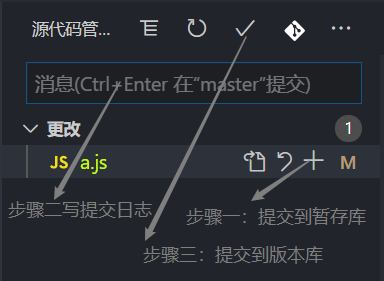

git的安装
linux/Mac的方法
在 Windows 平台上安装 Git 同样轻松，有个叫做 msysGit 的项目提供了安装包，可以到 GitHub 的页面上下载 exe 安装文件并运行：
下载地址

傻瓜式下一步，完成安装之后，就可以使用命令行的 git 工具（已经自带了 ssh 客户端）了，另外还有一个图形界面的 Git 项目管理工具。在开始菜单里找到”Git”->”Git Bash”，会弹出 Git 命令窗口，你可以在该窗口进行 Git 操作。
git配置
用户信息
配置个人的用户名称和电子邮件地址：1
2$ git config --global user.name "runoob"
$ git config --global user.email test@runoob.com如果用了 –global 选项，那么更改的配置文件就是位于你用户主目录下的那个，以后你所有的项目都会默认使用这里配置的用户信息。如果要在某个特定的项目中使用其他名字或者电邮，只要去掉 –global 选项重新配置即可，新的设定保存在当前项目的 .git/config 文件里。
查看git配置
1
git config --list
git免密码登录
登录一次密码后，用下面命令行记住密码1
git config --global credential.helper store
vscode中使用git
vscode中进行git配置
在vscode中点击文件 -> 首选项 -> 设置 -> 在搜索栏中搜索git.path -> 打开下方的setting.json文件填写如下：1
"git.path": "git.exe所在目录地址"
vscode中添加插件 Git History Diff
在vscode的操做git
- 上传到github
 - 创建分支

- 上传到github
合并分支
把分支合并过来- 切换到想合并别人的分支上，按下键盘crtl+ shift + p, 选择合并分支，选择要合并的分支
- 切换到想合并别人的分支上，按下键盘crtl+ shift + p, 选择合并分支，选择要合并的分支
冲突
- 当我们提交遇到冲突时
解决后在进行提交
- 当我们提交遇到冲突时
git基本命令